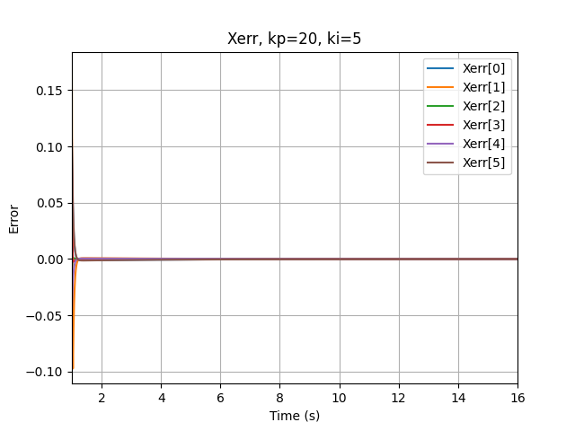
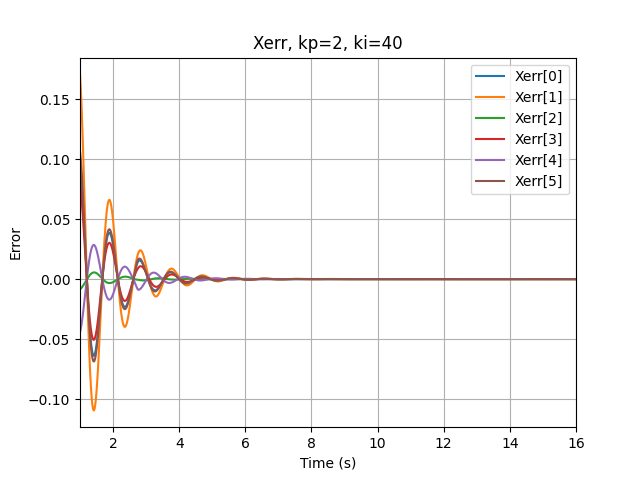

Description
In this project, I wrote a software that plans a trajectory for the end-effector of the YouBot mobile manipulator, performs odometry as the chassis moves, and performs feedback control to drive the youBot to pick up a block at a specified location, carry it to a desired location, and put it down in the V-REP simulation softwarw.
The YouBot is an omnidirectional mobile robot with a 5-DOF robotic arm, simulated in CoppeliaSim simulation software.
Overview
The projects covers the following topics:
Generating the Kinematics Simulator of the YouBot
In this part of the projects, I wrote a code that compute the next configuration of the robot, given the current robot configuration (Chassis phi, Chassis x, Chassis y, J1, J2, J3, J4, J5, W1, W2, W3, W4, Gripper), joints and wheels speed and the time step.
Plannig the End-Effector's Trajectory
In this part of the projects, I wrote a code that generates a reference trajectory for the robot's end-effector, given the end-effector configuration in different states, relative to the world or the cube frame.
Applying Feedback Control to Drive the Robot in the Desired Trajectory
In this part of the projects, I wrote a code that returns the commanded end-effector twist and the error of each joint, given the current, desired and next end-effector configurations and the PI control gains.
The feedback control of the the mobile manipulator is given by kinematic task-space feedforward plus feedback control law:

Results
Motion Planning with Different Initial and Final Cube Position
In this part, I simulated the the controlled motion with different initial and final cube position, and different initial robot's configuration.
Here are two motion planning and control simulations for different cube positions:

Initial position (1, 0, 0), Final position (0, -1, pi/2)

Initial position (1, 1, 0), Final position (1, -1, pi/2)
Motion Planning with Different Control Gains
In this part, I plotted the end-effector's twist error as a function of time, to explore the error's behavior when using different control gains.
Here are two motion planning and control simulations for different control gains:

kp=20, ki=5 - Controlled motion

kp=2, ki=40 - Overshoot motion